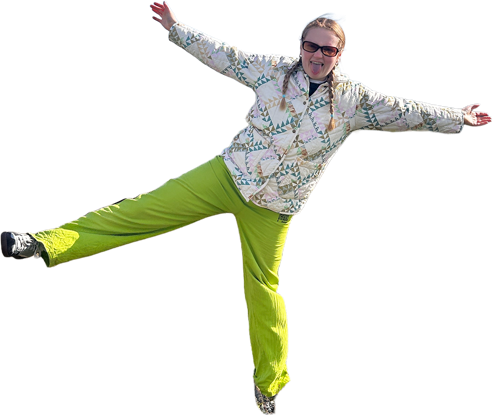
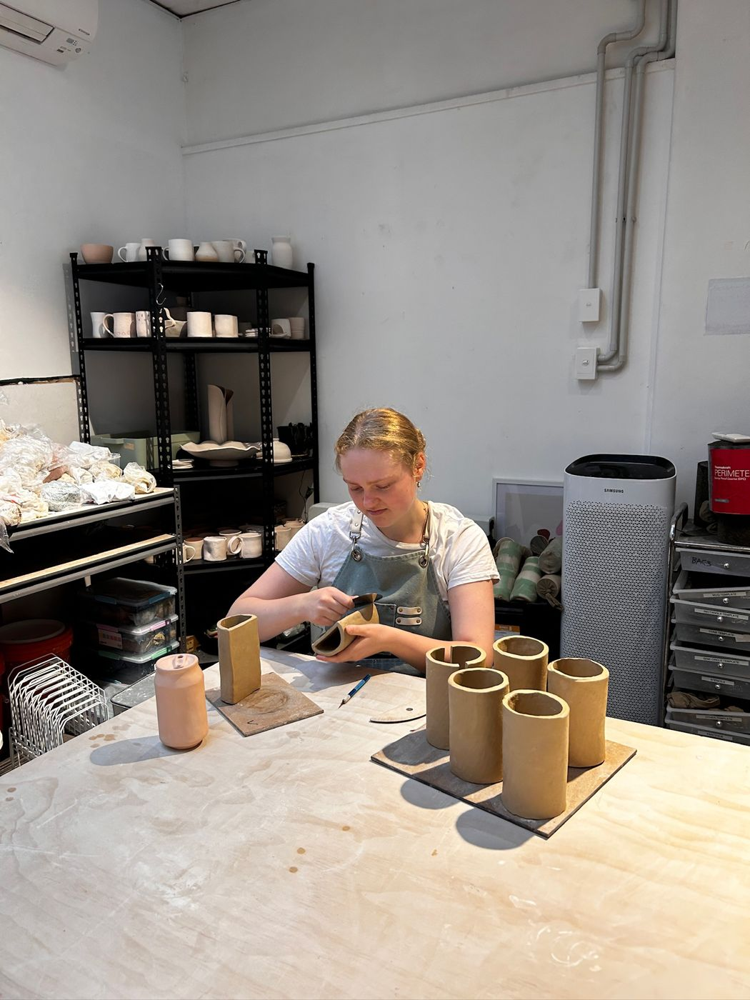
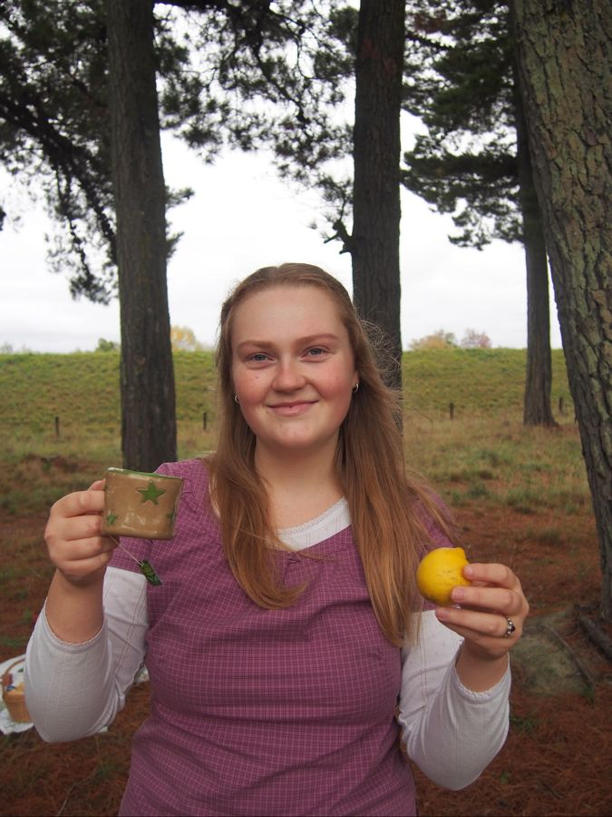
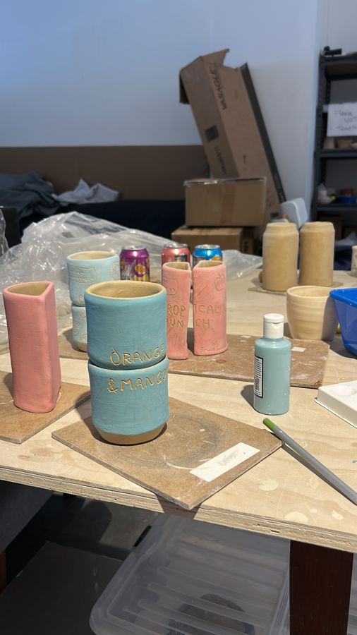
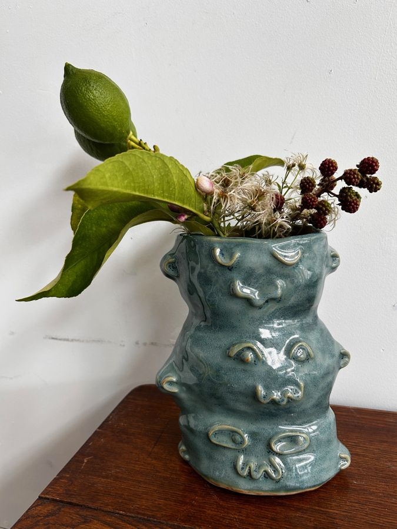
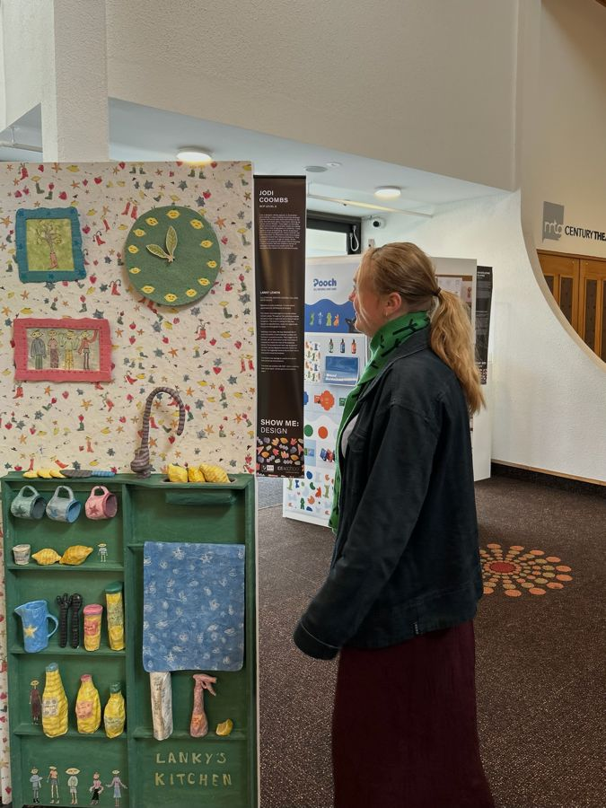
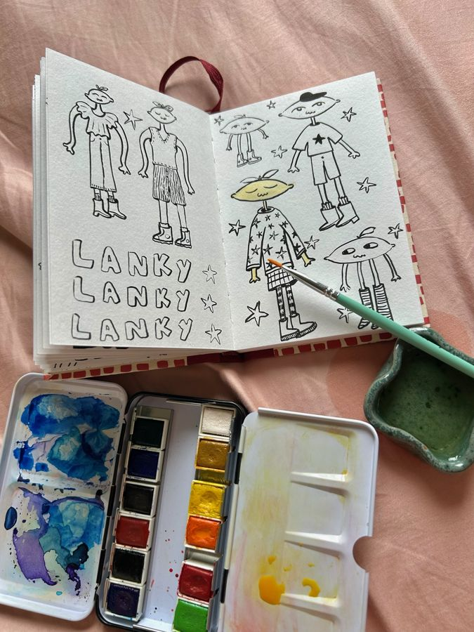

Lanky Design.
Who's Jodi?
Jodi is a maker with a constantly creative outlook on life.
She seeks inspiration from the trees,
The leaves blowing in the breeze,
The patterns rippling the water's surface,
For Jodi the earth serves as her true muse.

What's She Doing Right Now?
She's currently immersed in the world of clay, working part-time at Emily Mallard Ceramics in Napier. She creates stock for the shop whilst also helping customers along their creative journeys. Jodi enjoys the conversations and connections she's been lucky to make through this job. Otherwise she's often amidst many late night projects and seeking opportunities to learn through other's processes.
She Dabbles In.
Working on hands on craft is her favourite form
Clay
Drawing
Paper craft
Sculpture
Paper mache
Ideation
What does she care about?
Appreciation for the world and the many great things amongst it.
Jodi has a love for fine details and an appreciation for slowing down
What would would she like her future to be?
Jodi loves to create in 3D with the earth in mind. She would enjoy exploring more ways to transform spaces to tell stories as well as creating wee reminders of the many elements of joy in our world. She would love to help others along the journey of expressing these stories through creativity.


Experiences.
Click to read about what has shaped her
Auckland Design Week.
Jodi got involved in Auckland Design Week Read about it here.
Look it's Lanky!
Jodi's world on display!
Lanky Kitchen.
Jodi created an immersive papier mache kitchen.